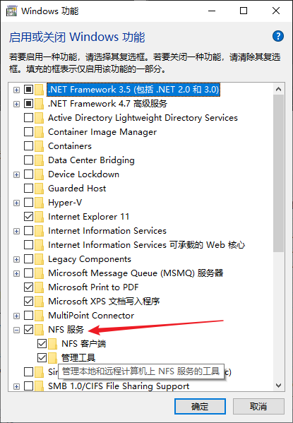
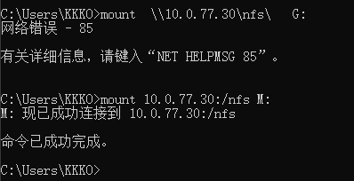

这次介绍一下NFS的搭建使用。我搭建这个的目的是用于PVE虚拟机备份数据的存放
搭建环境，Centos7
NFS 必须独立一台实体机器部署，不允许安装在PVE虚拟机里面
服务端
- 使用yum安装NFS (使用yum之前，记得“yum update” 一下)
# yum install nfs-utils
只安装 nfs-utils 即可，rpcbind 属于它的依赖，也会安装上
如果客户端没有安装nfs-utils , 挂载会报错
- 设置NFS服务开机启动
# systemctl enable rpcbind
# systemctl enable nfs
- 启动NFS服务
# systemctl start rpcbind
# systemctl start nfs
- 防火墙打开rpc-bind 和 nfs 的服务
# firewall-cmd –zone=public –permanent –add-service=rpc-bind
# firewall-cmd –zone=public –permanent –add-service=mountd
# firewall-cmd –zone=public –permanent –add-service=nfs
然后重启防火墙
# firewall-cmd –reload
如果对防火墙的用法和操作不熟悉，可以直接禁用防火墙的功能，但是不推荐这么做！
1. 关闭防火墙
# systemctl stop firewalld.service
2. 禁止防火墙服务开机自启
# systemctl disable firewalled.service- 在服务端新建一个共享目录，并设置权限
# mkdir /nfs
# chmod 777 /nfs ;权限要设置正确，不然客户端可能无法正常读写
- 编辑配置文件
# vim /etc/exports ;注意，刚开始这个配置文件可能不存在，需要我们自己创建
添加如下配置
/nfs/ 10.0.77.0/24(rw,sync,no_root_squash,no_all_squash)
- /nfs/: 共享目录位置。
- 10.0.77.0/24 : 只有77段的客户机能访问这个共享文件夹，这里不能写成“10.0.77.*/24” 通配符的格式。
- rw: 权限设置，可读可写。
- sync: 同步共享目录。
- no_root_squash: 可以使用 root 授权。
- no_all_squash: 可以使用普通用户授权。- 重启NFS服务
# systemctl restart nfs
可以检查一下本地的共享目录
# showmount -e localhost
客户端
linux客户端
- 安装nfs-utils
# yum install nfs-utils
- 设置rpcbind服务开机自启
# systemctl enable rpcbind
** 不论是客户端还是服务器端，要使用 NFS 时，两者都需要启动 RPC 才行 **
启动rpc
# systemctl start rpcbind
客户端不需要打开防火墙，因为客户端时发出请求方，网络能连接到服务端即可。
客户端也不需要开启 NFS 服务，因为不共享目录。- 创建目录并挂载
# mkdir /mnt/nfs
# mount -t nfs 10.0.77.30:/nfs /mnt/nfs
我在服务器创建的nfs共享目录位于根目录（ / ）下面，所以写法如上
- 测试挂载的目录是否能正常读写
mount.nfs:Operation not permitted
遇到这样的错误，查看服务器共享的目录权限，一般改为777- 客户端自动挂载
# vim /etc/fstab
在最后追加如下内容
10.0.77.30:/nfs /mnt/nfs nfs defaults 0 0- 修改了 /etc/fstab ，需要重新加载systemctl
# systemctl daemon-reload
Windows客户端
- 打开控制面板 > 程序 > 启用或关闭 Windows 功能，找到NFS服务打开子目录勾选NFS客户端与管理工具。

- 查看NFS服务器共享的目录。打开Windows的CMD
显示 NFS 服务器导出的所有共享
shoumount -e 10.0.77.30
显示 NFS 服务器上当前由某些 NFS 客户端安装的目录
shoumount -d 10.0.77.30
- 直接使用CMD进行挂载
mount 10.0.77.30:/nfs M:

如果出现网络错误，请检查是否命令格式输入正确
参考资料
CentOS 7 下 yum 安装和配置 NFS
https://qizhanming.com/blog/2018/08/08/how-to-install-nfs-on-centos-7
win10 挂载NFS（网络文件夹）
Windows客户端挂载NFS